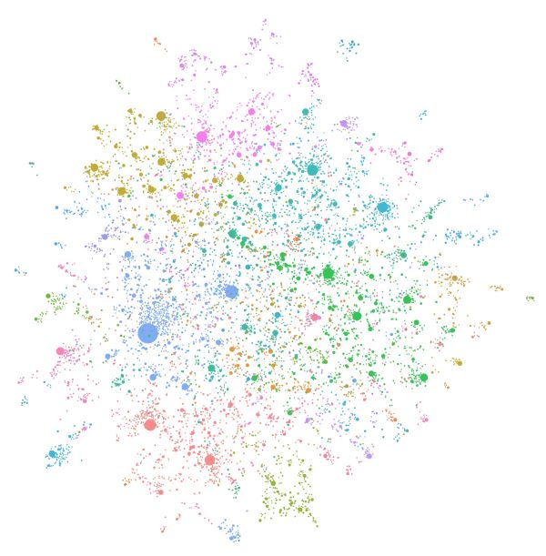
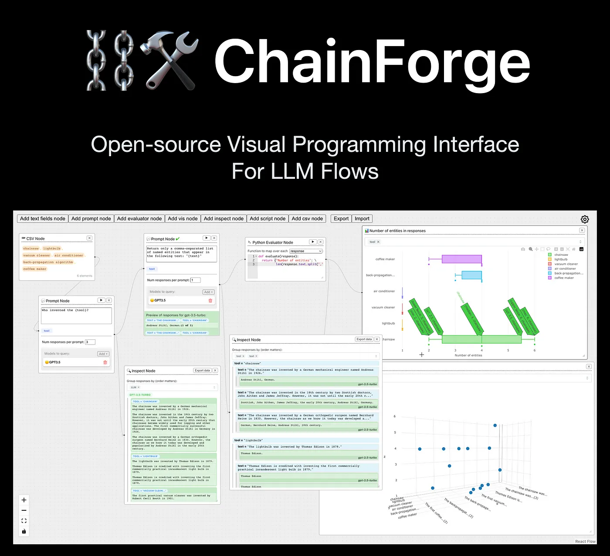

Projects
Selected open-source work on agents, retrieval, evaluation and LLM serving. Each project links to its code on GitHub, and some have walkthroughs on YouTube or write-ups on Medium.
Bundestag Lakehouse In progress
An end-to-end data platform on the German Bundestag open-data API. Raw data lands in Bronze, is cleaned into Silver and modelled into a Gold star schema, all incremental, tested and orchestrated with Airflow.
GraphRAG vs Vector RAG
Compares a knowledge-graph GraphRAG pipeline with traditional vector RAG on multi-hop QA. Comes with tracing, LLM-as-judge metrics and orchestration.
LLM Cache Lab
Measures prompt/KV caching with real cold-vs-warm experiments. In one test, a warm cache cut time to first token by 26x.
LLM Guardrails Benchmark
Benchmarks open-source guardrails on toxicity, PII leaks, jailbreaks and format adherence, and measures how much latency each one adds.

spaCy, NetworkX, Sentence-Transformers Qdrant, Ollama, StreamlitLiterary GraphRAG
A fully local GraphRAG system: knowledge-graph construction and retrieval where no data leaves the host.
Resume Job Matcher
An OCR + LLM pipeline that parses resumes and matches them against scraped job postings.
 Gradio, FastAPI, Whisper
LlamaIndex, PyMuPDF, MLflow, Docker
Gradio, FastAPI, Whisper
LlamaIndex, PyMuPDF, MLflow, Docker
Elderly Care Assessment Assistant
A speech-to-text and document retrieval assistant packaged as a containerised service.

ChainForge, Llama 3, Mistral, OllamaPrompt Evaluation with ChainForge
Systematic prompt engineering and model comparison at scale.
Fairness in ML
A toolkit for measuring and mitigating bias in ML models, so their risks and limitations can be identified and counteracted.